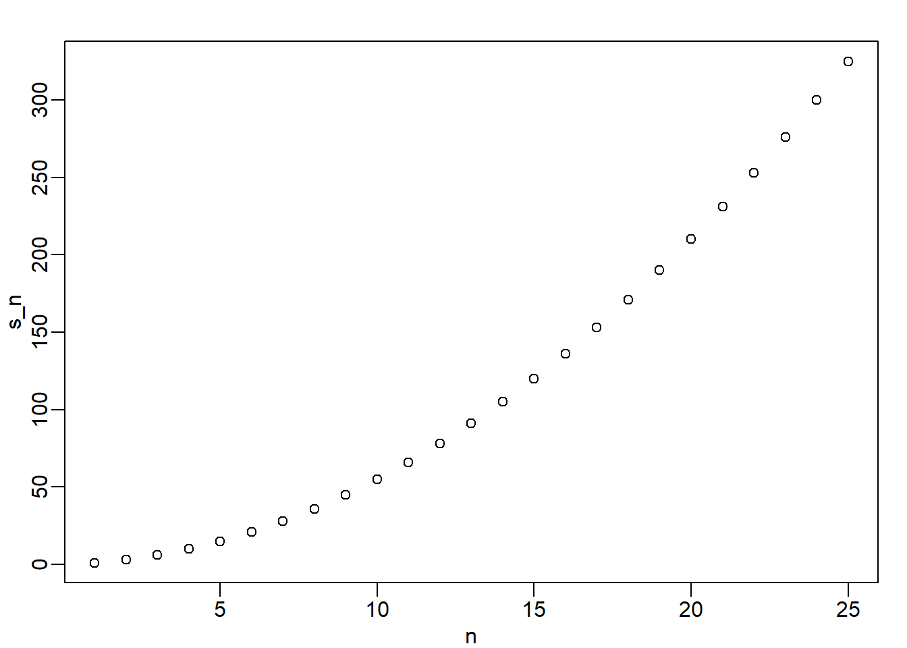

a <- 0
if(a!=0){
print(1/a)
} else{
print("No reciprocal for 0.")
}[1] "No reciprocal for 0."This assignment is due on Monday, September 9th, 11:59pm
All assignments are due on D2L by 11:59pm on the due date. Late work is not accepted. You do not need to submit your .rmd file - just the properly-knitted PDF. All assignments must be properly rendered to PDF using Latex. Make sure you start your assignment sufficiently early such that you have time to address rendering issues. Come to office hours or use the course Slack if you have issues. Using an Rstudio instance on posit.cloud is always a feasible alternative.
As you read through this assignment, practice with each of the examples (copy-paste them into an empty R script and run them). At the bottom of this page you will find the questions that comprise the assignment. These questions apply and expand on the topics and R functions in the assignment.
Download the {{< fa file-arrow-down title=“Download Assignment Template”>}} Lab assignment template. Please save the template into a labs folder in the EC242 folder on your local hard drive. If you don’t have a nice file structure setup for the course, please do so now. It will save you headaches in the future.
If you have not yet done so, you’ll need to install both R and RStudio. See the Installing page of our course resources for instructions.
I have created a video walkthrough for the basics of using R for another course, but it is useful here. You can see part A here (labeled “Part 2a”) here ] and part B here (labeled “Part 2b”) . You should already be at this level of familiarity with R, but if you need a review, this is a good place to start.
We teach R because it greatly facilitates data analysis, the main topic of this book. By coding in R, we can efficiently perform exploratory data analysis, build data analysis pipelines, and prepare data visualization to communicate results. However, R is not just a data analysis environment but a programming language. Advanced R programmers can develop complex packages and even improve R itself, but we do not cover advanced programming in this book. Nonetheless, in this section, we introduce three key programming concepts: conditional expressions, for-loops, and functions. These are not just key building blocks for advanced programming, but are sometimes useful during data analysis. We also note that there are several functions that are widely used to program in R but that we will not cover in this book. These include split, cut, do.call, and Reduce, as well as the data.table package. These are worth learning if you plan to become an expert R programmer.
Conditional expressions are one of the basic features of programming. They are used for what is called flow control. The most common conditional expression is the if-else statement. In R, we can actually perform quite a bit of data analysis without conditionals. However, they do come up occasionally, and you will need them once you start writing your own functions and packages.
Here is a very simple example showing the general structure of an if-else statement. The basic idea is to print the reciprocal of a unless a is 0:
Let’s look at one more example using the US murders data frame:
Here is a very simple example that tells us which states, if any, have a murder rate lower than 0.5 per 100,000. The if statement protects us from the case in which no state satisfies the condition.
ind <- which.min(murder_rate)
if(murder_rate[ind] < 0.5){
print(murders$state[ind])
} else{
print("No state has murder rate that low")
}[1] "Vermont"If we try it again with a rate of 0.25, we get a different answer:
if(murder_rate[ind] < 0.25){
print(murders$state[ind])
} else{
print("No state has a murder rate that low.")
}[1] "No state has a murder rate that low."A related function that is very useful is ifelse. This function takes three arguments: a logical and two possible answers. If the logical is TRUE, the value in the second argument is returned and if FALSE, the value in the third argument is returned. Here is an example:
The function is particularly useful because it works on vectors. It examines each entry of the logical vector and returns elements from the vector provided in the second argument, if the entry is TRUE, or elements from the vector provided in the third argument, if the entry is FALSE.
This table helps us see what happened:
| a | is_a_positive | answer1 | answer2 | result |
|---|---|---|---|---|
| 0 | FALSE | Inf | NA | NA |
| 1 | TRUE | 1.00 | NA | 1.0 |
| 2 | TRUE | 0.50 | NA | 0.5 |
| -4 | FALSE | -0.25 | NA | NA |
| 5 | TRUE | 0.20 | NA | 0.2 |
Here is an example of how this function can be readily used to replace all the missing values in a vector with zeros:
Two other useful functions are any and all. The any function takes a vector of logicals and returns TRUE if any of the entries is TRUE. The all function takes a vector of logicals and returns TRUE if all of the entries are TRUE. Here is an example:
As you become more experienced, you will find yourself needing to perform the same operations over and over. A simple example is computing averages. We can compute the average of a vector x using the sum and length functions: sum(x)/length(x). Because we do this repeatedly, it is much more efficient to write a function that performs this operation. This particular operation is so common that someone already wrote the mean function and it is included in base R. However, you will encounter situations in which the function does not already exist, so R permits you to write your own. A simple version of a function that computes the average can be defined like this:
Now avg is a function that computes the mean:
Notice that variables defined inside a function are not saved in the workspace. So while we use s and n when we call avg, the values are created and changed only during the call. Here is an illustrative example:
Note how s is still 3 after we call avg.
In general, functions are objects, so we assign them to variable names with <-. The function function tells R you are about to define a function. The general form of a function definition looks like this:
The functions you define can have multiple arguments as well as default values. For example, we can define a function that computes either the arithmetic or geometric average depending on a user defined variable like this:
We will learn more about how to create functions through experience as we face more complex tasks.
Once you start becoming more of an R expert user, you will likely need to load several add-on packages for some of your analysis. Once you start doing this, it is likely that two packages use the same name for two different functions. And often these functions do completely different things. In fact, you have already encountered this because both dplyr and the R-base stats package define a filter function. There are five other examples in dplyr. We know this because when we first load dplyr we see the following message:
The following objects are masked from ‘package:stats’:
filter, lag
The following objects are masked from ‘package:base’:
intersect, setdiff, setequal, unionSo what does R do when we type filter? Does it use the dplyr function or the stats function? From our previous work we know it uses the dplyr one. But what if we want to use the stats version?
These functions live in different namespaces. R will follow a certain order when searching for a function in these namespaces. You can see the order by typing:
The first entry in this list is the global environment which includes all the objects you define.
So what if we want to use the stats filter instead of the dplyr filter but dplyr appears first in the search list? You can force the use of a specific namespace by using double colons (::) like this:
If we want to be absolutely sure that we use the dplyr filter, we can use
Also note that if we want to use a function in a package without loading the entire package, we can use the double colon as well.
For more on this more advanced topic we recommend the R packages book1.
If we had to write this section in a single sentence, it would be: Don’t use for-loops. Looping is intuitive, but R is designed to provide more computationally efficient solutions. For-loops should be considered a quick-and-dirty way to get an answer. But, hey, you live your own life. Below we provide a brief overview to for-looping.
The formula for the sum of the series \(1+2+\dots+n\) is \(n(n+1)/2\). What if we weren’t sure that was the right function? How could we check? Using what we learned about functions we can create one that computes the \(S_n\):
How can we compute \(S_n\) for various values of \(n\), say \(n=1,\dots,25\)? Do we write 25 lines of code calling compute_s_n? No, that is what for-loops are for in programming. In this case, we are performing exactly the same task over and over, and the only thing that is changing is the value of \(n\). For-loops let us define the range that our variable takes (in our example \(n=1,\dots,10\)), then change the value and evaluate expression as you loop.
Perhaps the simplest example of a for-loop is this useless piece of code:
Here is the for-loop we would write for our \(S_n\) example:
In each iteration \(n=1\), \(n=2\), etc…, we compute \(S_n\) and store it in the \(n\)th entry of s_n.
Now we can create a plot to search for a pattern:

If you noticed that it appears to be a quadratic, you are on the right track because the formula is \(n(n+1)/2\).
Although for-loops are an important concept to understand, in R we rarely use them. As you learn more R, you will realize that vectorization is preferred over for-loops since it results in shorter and clearer code. (It’s also vastly more efficient computationally, which can matter as your data grows.) A vectorized function is a function that will apply the same operation on each of the vectors.
[1] 1.000000 1.414214 1.732051 2.000000 2.236068 2.449490 2.645751 2.828427
[9] 3.000000 3.162278 [1] 1 4 9 16 25 36 49 64 81 100To make this calculation, there is no need for for-loops. However, not all functions work this way. For instance, the function we just wrote, compute_s_n, does not work element-wise since it is expecting a scalar. This piece of code does not run the function on each entry of n:
Functionals are functions that help us apply the same function to each entry in a vector, matrix, data frame, or list. Here we cover the functional that operates on numeric, logical, and character vectors: sapply.
The function sapply permits us to perform element-wise operations on any function. Here is how it works:
[1] 1.000000 1.414214 1.732051 2.000000 2.236068 2.449490 2.645751 2.828427
[9] 3.000000 3.162278Each element of x is passed on to the function sqrt and the result is returned. These results are concatenated. In this case, the result is a vector of the same length as the original x. This implies that the for-loop above can be written as follows:
Other functionals are apply, lapply, tapply, mapply, vapply, and replicate. We mostly use sapply, apply, and replicate in this book, but we recommend familiarizing yourselves with the others as they can be very useful.
This is your first weekly lab assignment. Each lab assignment will need to be done in Rmarkdown using the lab template, just right-click and Save As…Start a new folder on your drive for this course, and inside that a new folder for lab assignments, and inside that a new folder for Lab No. 0. Rmarkdown will place some intermediate files in that folder, so leaving .Rmd files on your desktop will make things messy, fast.
Once you’ve saved the file, open it up in Rstudio.
Change the title to “Lab 0”
Put your name on it
Leave the date alone. That little `r Sys.time(...)` will ask R to return the date (with M-D-Y formatting), which Rmarkdown will put in as if you had typed in the actual date. Note - if your system time is rendered in unicode characters (which may be the case in some languages), you will get an error. If this happens, you’ll have to manually change the date in the header along with your name.
When you type ## 1. Text of..., Markdown will recognize “1. Text of” as a header and will automatically make it big.
Next will be the ```{r q1} text that will be in gray. R will recognize this as code and will treat it as such. Anything run in that block will have an output.
If you want to see what the code will do, copy the code and paste it into the gray area. Then, click the green right arrow in the top-right corner of the gray code chunk. It should show you the results.
Use the results (plus your understanding of the code) to answer the questions below.
With each completed question, click the “Knit” button up above the script window. Rmarkdown will create a .pdf for you of your work (as long as it doesn’t hit any R errors). Knit often to make sure you haven’t hit an error!
The \newpage line is a Latex command (the program that makes the typesetting look nice). It will start a new pdf page.
On the next page, copy question #2 to a new header using ##.
Keep going until done. Render one last .pdf, proofread it, and turn it in on D2L!
For more on using R Markdown, see the R Markdown page of our course resources. You can also learn about the general Markdown language on our Markdown page of our course resources
EXERCISES
In your first code chunk, load the package library tidyverse, which you will need for Question 8. Always load all your package libraries at the top, in the first code chunk!
What will this conditional expression return and why?
FALSE when at least one entry of a logical vector x is TRUE?all(x)any(x)any(!x)all(!x)The function nchar tells you how many characters long a character vector is. Write a line of code that assigns a new column in murders called new_names that is equal to the state column. Then, replace new_names with the corresponding state abbreviation when the state name is longer than 8 characters.
Create a function sum_n that for any given value, say \(n\), computes the sum of the integers from 1 to n (inclusive). Use the function to determine the sum of integers from 1 to 5,000.
Create a function altman_plot that takes two arguments, x and y, and plots the difference against the sum. That is, the difference should be on the y-axis and the and the sum should be on the x-axis. Use it to make an altman plot of x <- c(5,7,9) and y <- c(10,11,12). When your function creates the plot, it will output automatically in your Rmarkdown knitted .pdf.
After running the code below, what is the value of x and why?
Write a function compute_s_n that for any given \(n\) computes the sum \(S_n = 1^2 + 2^2 + 3^2 + \dots n^2\). Report the value of the sum when \(n=10\).
Define an empty numerical vector s_n of size 25 using s_n <- vector("numeric", 25) and store in the results of \(S_1, S_2, \dots S_{25}\) using a for-loop.
Repeat exercise 8, but this time use sapply.
Repeat exercise 8, but this time use map_dbl.
Plot \(S_n\) versus \(n\). Use points defined by \(n=1,\dots,25\).
Confirm that the equivalent formula for this sum is \(S_n= n(n+1)(2n+1)/6\). To do so, compare whether compute_s_n gives the same result for the vector s_n as the equivalent formula for the sum.
http://r-pkgs.had.co.nz/namespace.html↩︎